작업 흐름
- 입력
- 제품 · 앱 · 서비스 · 에이전트 하나와 사용자 이름. 로고나 음원이 있으면 함께
- 브리프
- 한 줄 요지, 인사 → 학습 → 읽기 → 질문 → 결과물 → 대량 → 실행 → 성과 → 끝의 장면 흐름, 8단어 이하의 읽을 문구, 카드마다 읽을 것과 질감, 숫자, 마스코트를 적은
BRIEF.md - 마스코트 · 그림
- 주제의 세계에서 고른 사물에 점 매트릭스 화면을 단 마스코트(SVG), 주제에 맞춰 코드로 그린 썸네일 · 포스터 · 목록. 마스코트 시트(화면 문구 전부, 좌우 회전, 채팅 아바타)
- 확인
- 장면 시트, 장면 하나의 8프레임 스트립. 읽을 문구의 시간 · 타이핑 속도 · 크기 · 화면 안 · 초점 · 겹침, 장면마다 움직임, 빈 화면, 장면 전환의 프레임 간 튐, 밝은 바탕, 포인트 색 비율, 결정성 검사
- 출력
- 30fps MP4(기본 1920×1080, 어떤 크기든), UI 효과음과 신스 배경을 합성한 WAV, 반복 재생 라이브 페이지
cd agent-launch-film/examples/bori
node ../../scripts/check.mjs index.html
node ../../scripts/render.mjs index.html --mascot --scale .5
node ../../scripts/render.mjs index.html --sheet --scale .4
node ../../scripts/score.mjs index.html --out out/film.wav
node ../../scripts/render.mjs index.html --audio out/film.wav
node ../../scripts/new-film.mjs ~/my-film요구 사항: Node + Playwright Chromium, ffmpeg. GPU · npm 설치 · API 키가 필요 없습니다(한 프레임은 페이지 스크린샷, 49초 예제의 절반 크기 미리 보기를 워커 4개로 약 2분). 단계별 순서는 SKILL.md에 있습니다.
샘플
원본 영상에 없는 주제로 브리프부터 새로 설계해 만든 예제의 장면, 시작 템플릿, 검토 시트입니다. 카드를 누르면 그 순간이 라이브 페이지에서 멈춘 채 열립니다.
「보리」 49초 · 9장면 · 한국어 · 96bpm
냉장고 사진 한 장으로 일주일 저녁을 정하고 장을 봐 주는 에이전트. 마스코트는 호박색 LED 화면을 단 밥솥이고, 김이 오릅니다. 재료 타일과 위에서 본 요리 그림은 모두 이 주제를 위해 코드로 그렸습니다
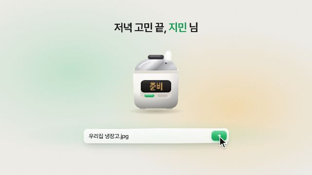
인사 · 5초저녁 고민 끝, 지민 님밥솥이 깨어나 화면이 보리 → 준비로 바뀌고, 입력창에 글자가 쳐진 뒤 커서가 버튼을 누름
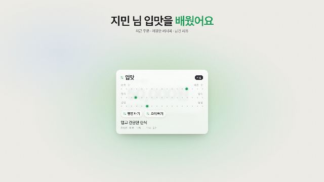
학습 · 카드 더미지민 님 입맛을 배웠어요앞 카드를 읽고 나면 카메라 쪽으로 들려 날아가고 뒤 카드가 앞으로 나옴
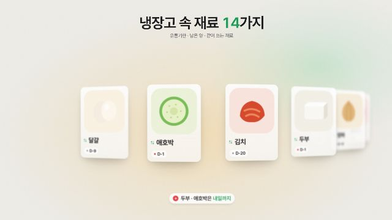
읽기 · 회전 카드냉장고 속 재료 14가지카운터가 올라가는 동안 재료 카드가 호를 따라 돌고, 유통기한이 가장 짧은 재료를 칩으로 알림
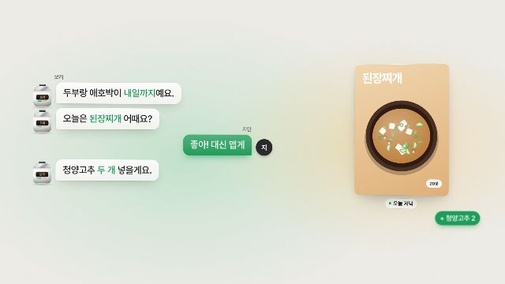
질문 · 채팅오늘은 된장찌개 어때요?에이전트는 반짝이며 생각한 뒤 글자를 흘려 쓰고, 사용자는 포인트 색 말풍선으로 답함. 오래된 말풍선은 위로 밀려 흐려짐
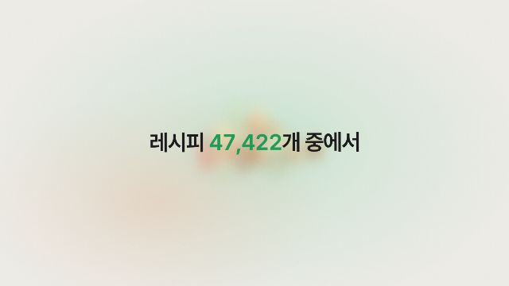
대량 · 스웜레시피 48,000개 중에서포스터 42장이 깊은 곳에서 카메라를 스쳐 지나가며 모션 블러로 번짐
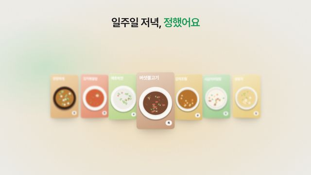
결과물 · 스포트라이트 줄일주일 저녁, 정했어요초점이 월요일부터 일요일까지 한 장씩 멈췄다 넘어감. 줄 전체가 초점을 따라 미끄러짐
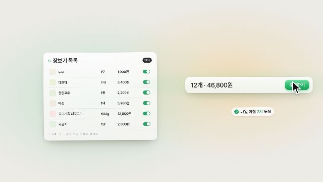
실행 · 버튼 하나12개 · 46,800원목록 줄이 차례로 들어오며 토글이 켜지고, 커서가 주문하기를 누르면 도착 시간 칩이 뜸
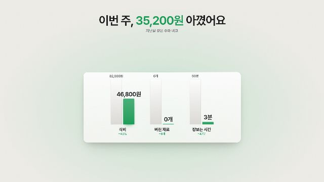
성과 · 전후 막대이번 주, 35,200원 아꼈어요그룹마다 단위가 달라 각자의 큰 값에 맞춰 그리고, 숫자는 전 값에서 후 값으로 셈
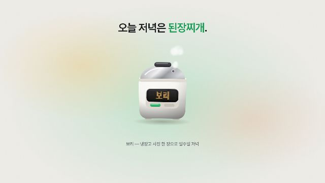
끝 · 마스코트오늘 저녁은 된장찌개.화면이 '완료'로 깜빡인 뒤 이름으로 돌아오고, 고개를 끄덕이기 전에 살짝 내려앉음
시작 템플릿 「Tally」 · 검토 20초 · 4장면 · 영어
프리랜서 장부를 정리해 주는 에이전트. 마스코트는 민트색 화면의 계산기입니다. 새 영상은 이 템플릿에서 시작해 마스코트 · 문구 · 카드를 모두 주제에 맞게 바꿉니다
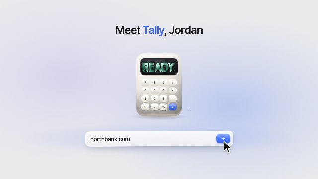
템플릿 · 인사Meet Tally, JordanLED 글자는 화면보다 넓으면 흐르기 전에 먼저 좁혀서 맞춤
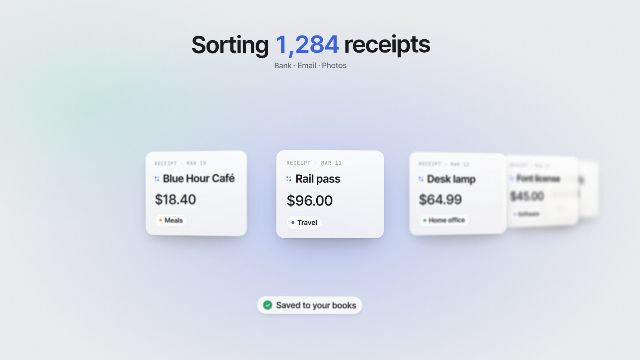
템플릿 · 회전 카드Sorting 1,284 receipts카메라가 앞 장면을 뚫고 지나간 뒤 이어지는 장면
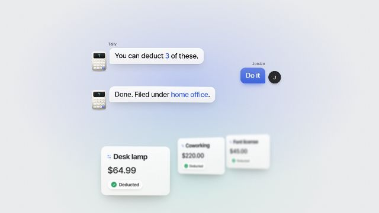
템플릿 · 채팅 + 줄You can deduct 3 of these.대답 뒤에 결과 카드가 줄로 들어오고 초점이 옮겨 감
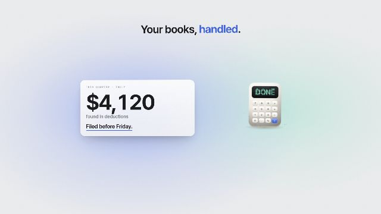
템플릿 · 끝Your books, handled.옆으로 휙 넘어온 장면에서 숫자가 올라가고 밑줄이 그어짐
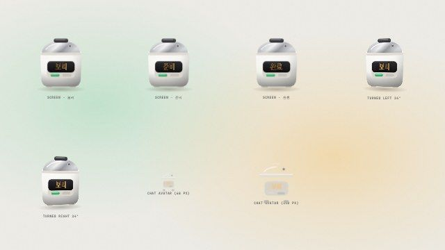
검토 · 마스코트 시트render.mjs --mascot영상이 쓰는 화면 문구 전부, 좌우 회전, 채팅 아바타를 한 장에 그려 글자가 읽히는지 확인
링크
- SKILL.md 워크플로
- 폴더 lib · scripts · templates · examples
- README.md 빠른 시작
- references/BRIEF.md 제품 → 브리프, 검토 목록
- references/LOOK.md 원본에서 읽은 화면 문법
- references/ENGINE.md 무대 · 장면 · 조각 · 계약
- references/MASCOT.md 마스코트 설계
- references/SOURCE.md 출처와 가져온 것
- references/LESSONS.md 겪은 문제와 해결